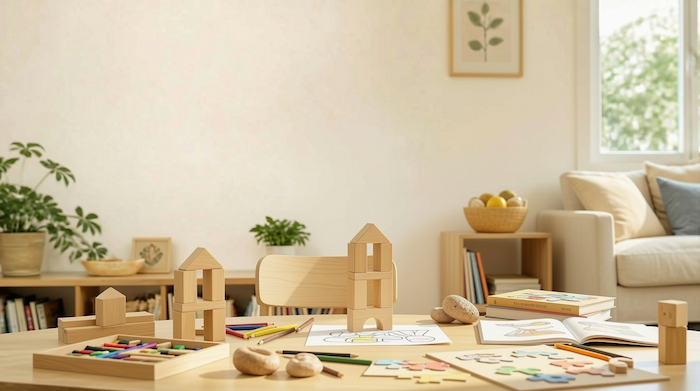

Welcome to the Home Learning Journal!
A place to record your family's learning while you live it.
Record My Learning!
A place to record your family's learning while you live it.
Record My Learning!Learning is not just sitting down in a classroom completing set worksheets or guided lessons.
Learning happens all the time.
You're in the supermarket and your child is reading the prices on the shelves, or working out which item is better value for money. You could be attending a trampoline park and they could observe whether having arms out or in make it easier to bounce. Here's an example:
Baking cupcakes:
Sometimes instead of trying to fit life around the curriculum areas & education, you can fit the learning/curriculum areas into your life!
As you start noticing the big learning moments in your day it will become much easier to notice all the small ones too.
Add Our LearningWe know what it's like when you're living life, exploring and completing normal daily tasks, only to realise that you haven't done any "learning" that day! But don't worry - learning happens all the time and we want to make it as easy as possible to record for future reference.
Grab your device (phone, tablet, laptop) and fill in the form with a few details, hit save and you are free to carry on with your day.
Each entry can take as little as 5mins - depending on the detail you want to add. You can fill it in throughout the day or leave it till the end and do a few at a time - it's completely up to you!
View Our Journal